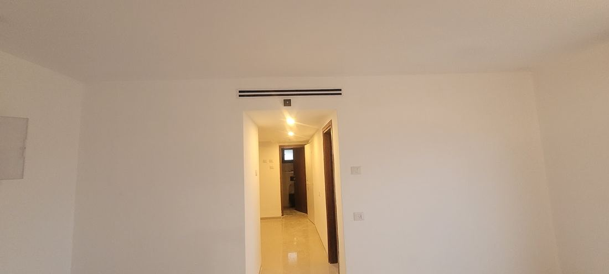
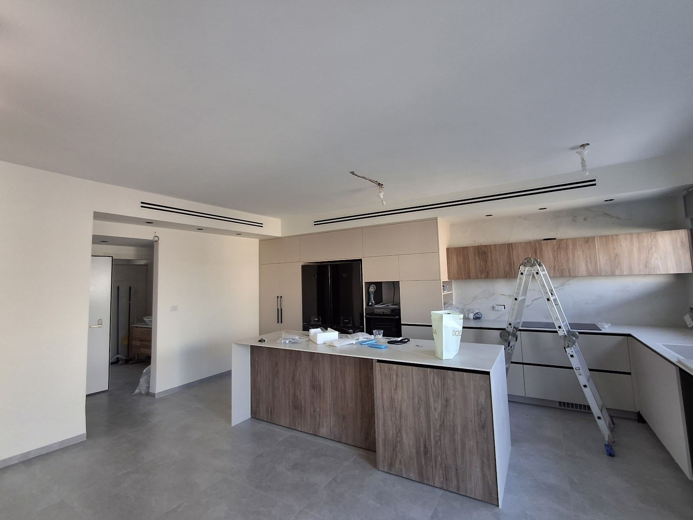
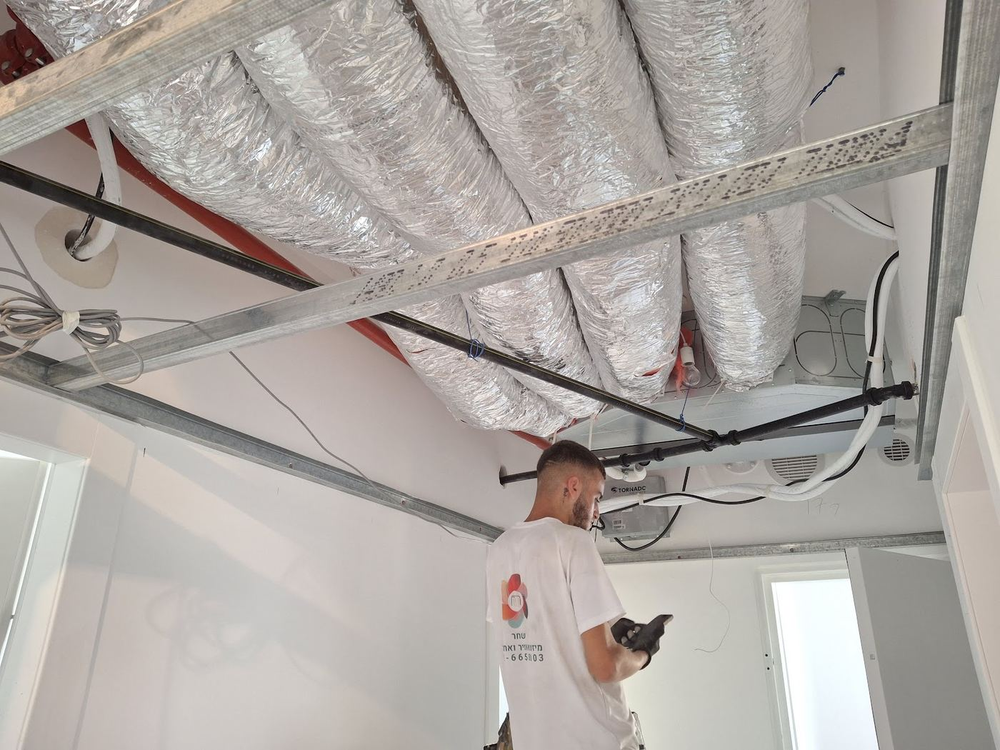
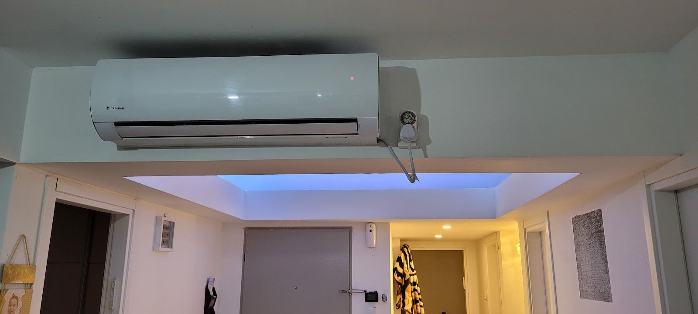
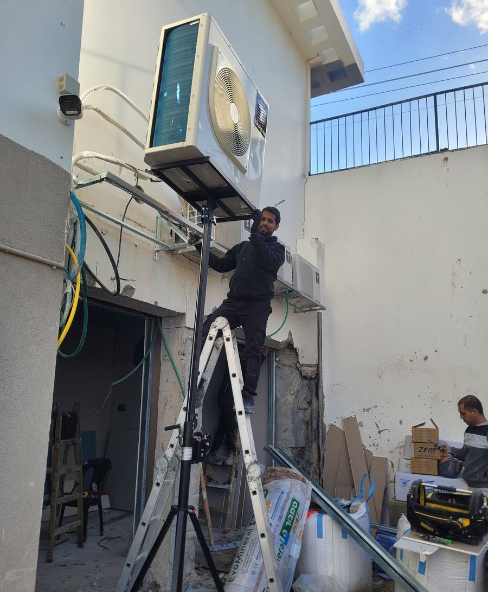
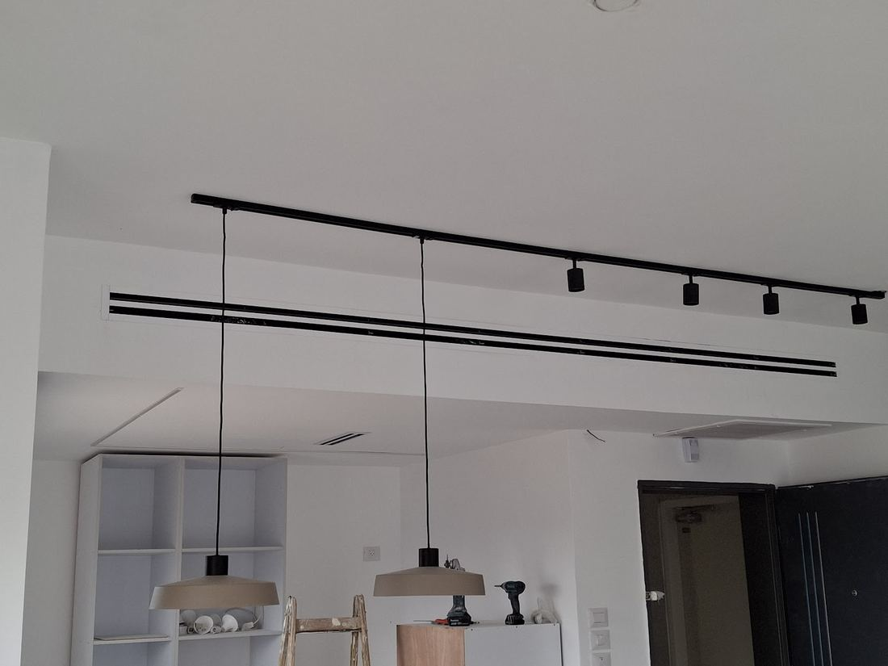

מיני מרכזי ומפזרים קווייםDucted units & linear diffusers
התעלות בתוך התקרה, ורק פס דק על הקיר.The ducts inside the ceiling, a thin line on the wall.
קונספט לדוגמה שנבנה עבור שחר שירות מיזוג וגבס · זה אינו האתר הרשמי של העסקA sample concept built for Shahar AC & Drywall Service · This is not the business’s official website

שחר מתקין מזגנים, ובונה סביבם תקרות גבס והנמכות עם ספוטים. הרב שבזי 13, קריית אתא.Shahar installs air conditioners and builds the drywall ceilings and bulkheads around them, spotlights included. 13 HaRav Shabazi St, Kiryat Ata.
התמונות מתוך העבודות של שחר בגוגלPhotos from Shahar’s jobs on Google


פרופילי מתכת, תעלות ומזגן מיני מרכזי, לפני שהתקרה נסגרת.Metal studs, ducts and a ducted unit, before the ceiling closes.
לוחות הגבס עולים לתקרה, ונשארים רק הפתחים למפזרים.The boards go up; only the openings for the diffusers are left.
מפזרים קוויים, ספוטים בהנמכה, והמטבח מקבל את התקרה שלו.Linear diffusers, recessed spots, and the kitchen gets its ceiling.
בערב: המזגן על הקיר ותאורה נסתרת בהנמכה.In the evening: the unit on the wall and hidden lighting in the bulkhead.
ארבע תמונות מתוך עבודות שונות של שחרFour photos from different jobs of Shahar’s
מזגנים, תקרות גבס וספוטים, מאותו בעל מקצוע.Air conditioners, drywall ceilings and spotlights, from one tradesman.

התעלות בתוך התקרה, ורק פס דק על הקיר.The ducts inside the ceiling, a thin line on the wall.

יחידה פנימית, חיצונית, והצנרת ביניהן.Indoor unit, outdoor unit, and the lines between.
שלד, לוחות, סרט, שפכטל.Frame, boards, tape, filler.
גם למזגנים ותיקים.Older units too.

שקועים בהנמכה או על מסילה.Recessed in the bulkhead or on a track.
חם, ניטרלי או קר: מה מתאים לחדר.Warm, neutral or cool: what suits the room.
משטח חלק לפני הצבע.A smooth surface before the paint.
שחר מקצועי, מסור ואמין. עשה לנו גבס, חיבר ספוטים והתקין מזגנים בדירה חדשה. אכפת לו שיצא טוב ויפה… ליווה אותי בתהליך קנייה ובחירת הספוטים.
Shahar is professional, dedicated and reliable. He did our drywall, connected the spots and installed the ACs in a new flat. He cares that it comes out good and beautiful… He guided me through buying and choosing the spots.
אלוף מיקצועי, נעים הליכות, מגדיל ראש, ממש כיף לעבוד איתו.
A true professional, pleasant, goes the extra mile, really fun to work with.
כבר שנים מקבלים ממנו שרות… כולל עבודות גבס נקיות ומדויקות. מבצע עבודה מקצועית נקיה שירות מכל הלב…
For years we’ve been getting service from him… including clean, precise drywall work. He does professional, clean work, service from the heart…
שחר מקצוען אמיתי, קשוב לכל שאלה, בן אדם נעים וטוב לב. עשה אצלי התקנת שלושה מזגנים כולל גבס…
Shahar is a real pro, attentive to every question, a pleasant, kind-hearted person. He installed three ACs for me, drywall included…
שתי עבודות ששחר עשה לי, הייתי מאוד מרוצה… ועשה הרבה מעבר והכל במאור פנים.
Shahar did two jobs for me and I was very pleased… he did a lot more than needed, all with a smile.
כן. מזגנים, תקרות והנמכות גבס וחיבור ספוטים, גם באותה דירה.Yes. Air conditioners, drywall ceilings and bulkheads, and connecting spots, in the same flat too.
לפי אחת הביקורות, שחר ליווה לקוח בקנייה ובבחירת הספוטים. אפשר לשאול אותו בוואטסאפ.One review says Shahar guided a customer through buying and choosing the spots. Ask him on WhatsApp.
כן: תיקון מזגנים ישנים, ניקוי מערכות מיזוג וחידוש שלהן, כפי שכתוב בביקורות.Yes: repairing old units, cleaning and renewing systems, as the reviews describe.
א׳–ד׳ 8:30–21:30, ה׳ 8:30–21:00, ו׳ 8:30–13:30. בשבת סגור.Sun–Wed 8:30–21:30, Thu 8:30–21:00, Fri 8:30–13:30. Closed on Saturday.
עכשיוNow